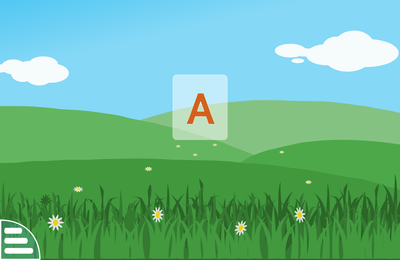

给五岁娃找正经教育软件，我被 GCompris 刷新了认知
朋友家五岁娃刷短视频刷得停不下来，试了一堆收费教育 APP 都是三分钟热度，直到装上这个开源项目——从敲键盘到调色实验，每一项活动都踩在"能让娃主动动脑"的点上。
上个月帮朋友找给五岁儿子的教育软件，翻了市面上一堆收费 APP 之后我心态有点崩：界面花里胡哨，动不动弹个广告，内容套路都是"集齐十个贴纸解锁下一关"——本质上还是在抓眼球，不是在教东西。直到朋友从GCompris官网看到这套东西，说给娃装了两天，娃自己主动坐到了电脑前。
第一眼：不是我想象中的"儿童软件"
安装包从官方下载拿的，Windows 上一路默认就装好了。打开之后是那种朴素的大色块界面，没有动画特效，主菜单直接把所有活动板块列出来：鼠标键盘、阅读启蒙、数学闯关、科学人文、创意运动……一共十好几个分类，每个里面又有若干具体活动。我数了数，整套软件里有上百项独立活动，覆盖了学龄前到小学低年级的基础知识。
说实话第一眼觉得"这不就是个教育软件么"，界面甚至有点老派。但坐下来跟朋友家娃一起玩了一个小时之后，我才发现这里面的设计逻辑跟商业 APP 完全不在一个赛道上。

三个让我刮目相看的活动
我挑了三个自己觉得有意思的板块，跟娃一起过了一遍。
键盘不是"敲着玩"，是一条有梯度的学习线
之前见过的儿童键盘练习要么是乱敲出乱码图，要么直接上来就打字。GCompris 把键盘活动拆成了三档递进：第一档叫"我的第一个键盘"，屏幕上飘着大字母，娃敲键盘上任意一个键，屏幕就冒出对应字母的图形和发音——完全不要求"敲对"，就是建立手眼关联，让娃觉得"按键盘是好玩的事"。
第二档才开始"看着屏幕找字母"：屏幕显示一个字母，娃在键盘上找到按下去，按对了才推进。再往上是第三档"下落单词"，单词一个字母一个字母往下掉，要在落地之前把整个词敲完。我自己试了一下第三档，速度不算慢，确实需要注意力集中，不是瞎敲能过的。
最有意思的是这套键盘线和阅读线是打通的：键盘练到"简单字母"的时候，阅读板块里正好有"听发音点字母"的认字母活动，一个练手、一个练耳，两边呼应。这种模块之间的联动，我在商业教育 APP 里几乎没见过——它们通常是一堆独立小游戏堆在一起，各玩各的。

调色实验：帮娃搞懂"颜料和光为什么不一样"
科学板块里有个调色实验，里面两个活动并排摆着：一个调颜料、一个调光。看起来相似，原理完全相反。
调颜料的那个让你从颜料管里选颜色倒进调色盘，调出目标色——蓝加黄变绿，红加蓝变紫，颜料混得越多越暗，这是减色混合。调光的那个手里换成红绿蓝三束光，两两叠加出洋红、青、黄，三色全加是白光，光叠得越多越亮，这是加色混合。
我小时候搞了好久才搞明白这俩的区别，结果这个软件把它变成了两个并排的小游戏。娃玩完两个之后我试着问他"为什么颜料越混越黑，光越叠越亮"，他说"因为颜料吃掉了光呀"——当然他说不出吸收反射的物理原理，但他有了一种"这俩东西反着来"的直觉，这就是启蒙该有的样子。
居然给每个孩子配"定制练习包"
玩到一半我才发现，这套软件有个正式的"数据集"机制：主程序里可以按每个孩子的能力设定活动的难度和范围。比如数数活动里可以限定只操作 1 到 10，大一点的数留到以后；排序图片的活动，可以给只识数字的娃配数字版，给能读字的娃配文字版。
朋友家老大七岁、老二五岁，他给两个娃建了不同的练习包。老大进的是乘法练习和分数活动，老二还在玩数数和简单字母。设备轮流用时各进各的，互不干扰。这个设计思路不就是课堂教学的分组练习嘛，但商业 APP 里谁舍得给你做这种精细化的配置——它们巴不得所有用户走同一条路线，好统一卖课。
官方GCompris文档里还介绍了独立的教师伴侣应用，能创建和管理这些数据集，推给学生的主程序，还能接收部分活动的成绩。家庭用不上这么全，但两三个娃的家庭用主程序自带的数据集就够了。
适合谁，不适合谁
适合的群体其实挺清晰的：学龄前到小学低年级的孩子，家长想找不瞎晃、有体系的教育工具的；学校或培训机构想给不同能力的孩子布置定制练习的；想让孩子用电脑但又不想让他刷短视频的——这套软件没有网络功能（连不上外网），没有广告，没有打卡任务，纯粹就是活动本身。
不太适合的情况：想抓着玩的大孩子——内容上限大概到小学三年级，再往后就不够用了；只看视频不想动手的娃——所有活动都是互动的，没有被动观看的环节；想找中文专属内容的家庭——界面有多语言支持，但活动内容本身是基于欧洲小学课程标准设计的，个别板块比如历史人文里的内容国内孩子可能没代入感。
还有个小细节：全尺寸键盘比笔记本紧凑的键盘更适合，娃的小手在标准键盘上找字母会更顺手。另外耳机或外放一定要有——认字母那些活动全靠语音提示，没声音就玩不了。
写在后面
我不是在推荐一个"完美的软件"——它的界面确实老派，活动数量虽多但每个活动的画面都不算精致，跟那些花了大价钱做美术的商业 APP 比"卖相"差远了。但我觉得它的好恰恰在这里：它不试图用动画和贴纸抓住孩子，而是用活动本身的设计逻辑让孩子愿意玩下去。
这套软件的开发背景挺有意思，是 KDE 社区下的开源项目，全球几十个志愿者在维护。没有商业化压力，所以它不用搞"每日签到""限时解锁""会员专属活动"那一套。活动难度的分级参考的是法国小学课程标准，数据集机制是给学校用的正式设计——这些细节堆在一起，你能感觉到做这件事的人是真的在想"孩子怎么学才对"，而不是"怎么让家长掏钱"。既然是开源项目，完整的活动配置和说明也都放在公开仓库里了——GitHub、Gitee、GitCode 三个地址都能拿到，国内网络选后两个更快。
如果你正在给家里的小朋友找一套正经的启蒙工具，不妨试试看。